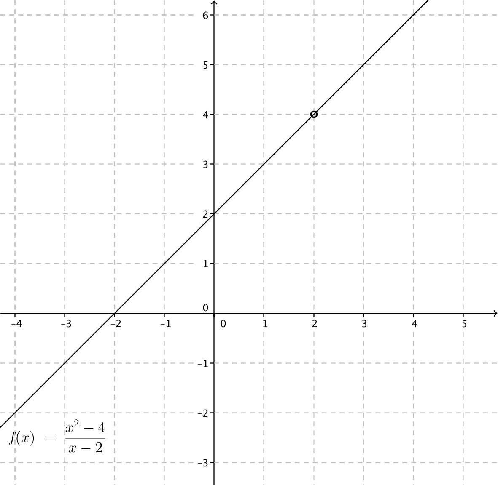

3. Gränsvärde för en funktion
Så där, nu är vi färdiga för att börja med nya saker. Det första är gränsvärde.
Funktionen \( \dfrac{x^2-4}{x-2} \) är inte definierad då \( x=2 \). Undersök funktionen värden då \( x \) närmar sig värdet 2.
Lösning
Vi närmar oss punkten 2 från vänster och höger.
Då vi närmar oss från vänster ser värdena ut som:
\( \begin{array}{cl} x & f(x)\dfrac{x^2-4}{x-2} \\ 1,5 & 3,5 \\ 1,9 & 3,9 \\ 1,99 & 3,99 \\ 1,999 & 3,999\\ \end{array} \)
Och då vi närmar oss från höger ser värdena ut som:
\( \begin{array}{cl} x & f(x)\dfrac{x^2-4}{x-2} \\ 2,5 & 4,5 \\ 2,1 & 4,1 \\ 2,01 & 4,01 \\ 2,001 & 4,001\\ \end{array} \)
Det ser ut som om funktionens värde närmar sig talet 4 då \( x \) närmar sig talet 2.
Funktionen \( f(x)=\dfrac{x^2-4}{x-2} \) kan vi förkorta till \( f(x)=\dfrac{x^2-4}{x-2} = \dfrac{(x-2)(x+2)}{x-2} = x+2 \). När vi ritar grafen av funktionen påminner den om linjen \( y=x+2 \) förutom att den inte är definierad då \( x=2 \).
Linjen \( y = x+2 \).

Funktionen \( f(x)=\dfrac{x^2-4}{x-2} \).

Då vi undersöker värden för funktioner där funktionerna inte är definierade arbetar vi med gränsvärden. Gränsvärdet för en punkt betyder att vi går oändligt nära en punkt men vi går aldrig ända fram.
Du kan tänka dig att punkten som vi vill undersöka är kexburken som fanns på översta hyllan i köket när du var liten och hur du än sträckte och sträckte på dig nådde du inte fram. Fingertopparna var helt nära kexburken men de rörde den inte.
Matematiskt beskriver vi det som följande:
Om det existerar ett gränsvärde, \( b \), för en funktion, \( f \), i punkten \( a \) betecknar vi det som \( \lim_{x \to a} f(x)=b. \)
Vi kan även använda oss av beteckningen \( f(x) \to b \) då \( x \to a \).
Bestäm gränsvärdet för funktionen \( f(x)=\dfrac{2x}{x+1} \) då \( x=3 \).
Funktionen \( f \) är definierad då \( x=3 \). Gränsvärdet är \( \lim_{x \to 3} \dfrac{2x}{x+1} = \dfrac{2\cdot 3}{3+1} = \dfrac{6}{4} \).
Vi bestämmer gränsvärdet genom att sätta in värdet i funktionen.
Exempel 1 Bestäm \( \lim_{x \to 3} \dfrac{3x^2-9}{x-3} \).
Lösning
Om vi sätter in \( x=3 \) i funktionen får vi \( \dfrac{3\cdot 3^2 -9}{3-3} = \dfrac{18}{0} \) som inte är definierat. Det vi måste göra är att förenkla \( f \) till en sådan form att vi kan sätta in värdet 3 på \( x \) plats.
\( \begin{array}{rcll} \lim_{x \to 3} \dfrac{3x^2-9}{x-3} & = & \lim_{x \to 3} \dfrac{3(x^2-3)}{x-3} \\ & = & \lim_{x \to 3} \dfrac{3(x-3)(x+3)}{x-3}& \text{Vi förkortar,} \\ & = & \lim_{x \to 3} 3(x+3)& \text{och bestämmer gränsvärdet.} \\ & = & 3(3+3) = 18 \\ \end{array} \)
Exempel 2 Bestäm gränsvärdet för funktionen \( f(x)=\dfrac{4x}{x^2-x} \) i punkten 0.
Lösning
För funktionen \( f \) gäller att i punkten 0 har nämnaren värdet 0. Vi måste förenkla.
\( \begin{array}{rcll} \lim_{x\to 0} \dfrac{4x}{x^2-x} & = & \lim_{x\to 0} \dfrac{4x}{x(x-1)} \\ & = & \lim_{x\to 0} \dfrac{4}{x-1} \\ & = & \dfrac{4}{0-1} = -4 \\ \end{array} \)
Gränsländer för \( f \) i punkten 0 är \( -4 \).
Exempel 3 Undersök gränsvärdet för funktionen \( f=\dfrac{x}{x-1} \) då \( x=1 \).
Lösning
Funktionen \( f \) är inte definierad då \( x=1 \). Vi kan inte förkorta bort något och undersöka gränsvärdet den vägen.
Vi tar och närmar oss \( x=1 \) från vänster och höger med hjälp av tabell.
Då vi närmar oss från vänster får vi följande värden.
\( \begin{array}{cl} x & \dfrac{x}{x-1} \\ 0,5 & -1\\ 0,9 & -9\\ 0,99 & -99\\ 0,999 & -999\\ \end{array} \)
Och från höger ser det ut som följande.
\( \begin{array}{cl} x & \dfrac{x}{x-1} \\ 1,5 & 3\\ 1,1 & 11\\ 1,01 & 101\\ 1,001 & 1001\\ \end{array} \)
Vi märker att vi inte alls närmar oss samma värde. \( \lim_{x \to 1}\dfrac{x}{x-1} \) existerar inte. Det ger även grafen av funktionen.

- Bestämmer vi gränsvärden i punkter där funktionen är definierad är det bara att sätta in värdet i funktionen.
- Har vi situationen \( \dfrac{}{0} \) eller \( \dfrac{0}{0} \) måste vi förkorta för att kunna undersöka gränsvärdet.
- Kan vi inte förkorta för att undersöka gränsvärdet kan vi undersöka gränsvärdet genom att göra en tabell. Hur exakt vi gör kommer fram i kurs 13.
Uppgifter
- När vi bryter ut finns det tre olika sätt som vi kan arbeta med.
- Bryta ut det gemensamma \( 3x^2-x =x(3x-1) \)
- Använda oss av konjugatregeln \( x^2-4 = (x+2)(x-2) \)
- Utnyttja nollställena \( x^2+x-2=(x-1)(x+2) \) eftersom nollställena är \( x_1 = 1 \) och \( x_2 = -2 \). För alla uttryck kan vi alltid utnyttja nollställena. Detta är arbetsdrygt men det fungerar alltid.
Välj rätt alternativ för hur vi kan bryta ut följande uttryck.
Påstående Bryta ut det gemensamma Konjugatregeln Nollställena \( 4x^2-2x \) \( x^2-2x-3 \) \( x^2-9 \) \( 16-x^2 \) \( 2x^2-3x \) \( x^2+4x+3 \) \( 7x-x^2 \) \( x^2+2x-8 \) Påstående Bryta ut det gemensamma Konjugatregeln Nollställena \( 4x^2-2x \) \( x^2-2x-3 \) \( x^2-9 \) \( 16-x^2 \) \( 2x^2-3x \) \( x^2+4x+3 \) \( 7x-x^2 \) \( x^2+2x-8 \) - Bestäm gränsvärdet för funktionen \( f(x)=\dfrac{3x}{x-1} \) i \( x=2 \).
Eftersom \( f \) är definierad i \( x=2 \) är det bara att räkna på.
\( \lim_{x \to 2} f(x)=\dfrac{3x}{x-1}= \dfrac{3\cdot 2}{2-1}=6 \).
- Bestäm gränsvärdet för funktionen \( f(x)=\dfrac{x}{x^2-x} \) i \( x=2 \).
Vi kan förkorta och förenkla om vi vill, med det behöver vi inte.
\( \lim_{x \to 2} f(x)=\dfrac{x}{x^2-x} =\dfrac{2}{2^2-2} = 1 \).
- Bestäm gränsvärdet för \( f(x)=\dfrac{x^2-16}{x-4} \) då \( x=4 \).
\( \lim_{x\to 4}\dfrac{x^2-16}{x-4} = \lim_{x \to 4} \dfrac{(x-4)(x+4)}{x-4} = \lim_{x \to 4} x+4 = 4+4 = 8 \).
- Bestäm gränsvärdet för \( f(x)=\dfrac{x^2-16}{x+4} \) då \( x=-4 \).
\( \lim_{x \to -4} \dfrac{x^2-16}{x+4} = \lim_{x \to -4} \dfrac{(x-4)(x+4)}{x+4} = \lim_{x \to -4} x-4 = -4-4=-8 \).
- Bestäm gränsvärdet för \( f(x)=\dfrac{x^2-3x+2}{x-2} \) då \( x=2 \).
\( \lim_{x \to 2}\dfrac{x^2-3x+2}{x-2} = \lim_{x \to 2} \dfrac{(x-1)(x-2)}{x-2} = \lim_{x\to 2} x-1=2-1=1 \).
- Bestäm gränsvärdet för \( f(x)=\dfrac{x^2-x}{x-1} \) då \( x=1 \).
\( \lim_{x \to 1}\dfrac{x^2-x}{x-1} = \lim_{x \to 1}\dfrac{x(x-1)}{x-1} =\lim_{x \to 1} x = 1 \).
- Bestäm \( \lim_{x \to 2} \dfrac{x^2-4}{x-2} \).
Eftersom vi har \( \dfrac{0}{0} \) måste vi förkorta.
\( \lim_{x \to 2} \dfrac{x^2-4}{x-2} = \lim_{x \to 2} \dfrac{(x-2)(x+2)}{x-2} = \lim_{x \to 2} x+2 = 2+2=4 \).
- Bestäm \( \lim_{x \to 2} \dfrac{x^2+3x+2}{x^2+x} \).
\( \lim_{x \to 2} \dfrac{x^2+3x+2}{x^2+x} = \lim_{x \to 2} \dfrac{(x+2)(x+1)}{x(x+1)} = \lim_{x \to 2} \dfrac{x+2}{x} = \dfrac{2+2}{2} = 2 \).
- Bestäm \( \lim_{x \to 0} \dfrac{2x^2+4x}{2x^2-2x} \).
\( \lim_{x \to 0} \dfrac{2x^2+4x}{2x^2-2x} = \lim_{x \to 0} \dfrac{2x(x+2)}{2x(x-1)} = \lim_{x \to 0}\dfrac{x+2}{x-1} = \dfrac{0+2}{0-1} = -2 \).
- Bestäm \( a \) så att \( f(x)=\dfrac{x^2+ax-2}{x-1} \) har ett gränsvärde i punkten 1.
Vad skall du kunna förkorta med för att kunna bestämma gränsvärdet? Utnyttja att \( x=1 \) är ett nollställe för täljaren.
Förkorta med \( (x-1) \) betyder att täljaren har en faktor \( (x-1) \)
Att täljaren har faktorn \( (x-1) \) betyder att \( x=1 \) är ett nollställe för täljaren.
\( 1^2+a\cdot 1-2=0 \) ger \( a=1 \).
- Bestäm gränsvärdet.
\( \lim_{x \to 1} \dfrac{x^2+x-2}{x-1} = \lim_{x \to 1} \dfrac{(x+2)(x-1)}{x-1} = \lim_{x \to 1} x+2 = 1+2 = 3 \).
- Bestäm gränsvärdet.